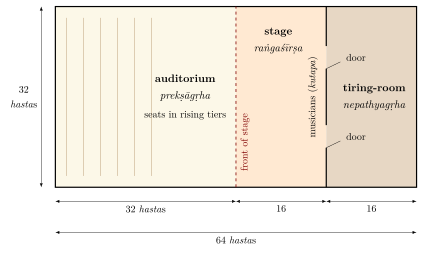
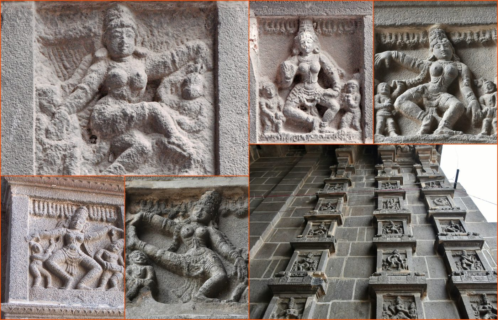

Chapter 2: The Nāṭyaśāstra¶
Nāṭyaśāstra 1.116
na taj jñānaṃ na tac chilpaṃ na sā vidyā na sā kalā
nāsau yogo na tat karma nāṭye ’smin yan na dṛśyate
“There is no knowledge, no craft, no learning, no art, no discipline and no action that is not seen in this drama.”
The Nāṭyaśāstra, “the treatise on drama” ascribed to the sage Bharata, is the oldest surviving Indian text on the performing arts and the work to which almost every later theorist of music, dance and theatre in South Asia refers. It treats as a single subject what modern institutions divide into separate disciplines: the building of the playhouse and its consecration, the preliminary rites, acting with body, voice, costume and inner feeling, dance, the structure of plays, the languages of the stage, prosody, the theory of aesthetic experience (rasa), the scales and melodic types of music, rhythm, instruments, songs, the types of character and the distribution of roles. A reader who opens it expecting a philosophy of art finds instead a working manual, full of measurements, lists and rules, and it is as a manual for performers that it is read here: its date and transmission first, and then the parts that bear most directly on performance, from the building of the theatre to the music. Its theory of rasa and of the four modes of acting is the subject of Chapter 3; its account of hand gestures is treated with the later gesture manuals in Chapter 14; and its classification of plays, which belongs as much to literature as to the stage, is discussed further in Chapter 19 and in Volume 8, Kāvya Kalpalatā.
2.1 The Text, Its Date and Its Transmission¶
2.1.1 Authorship and date¶
The text presents itself as the teaching of the sage Bharata to other sages, who ask him about the origin and nature of the “Veda of drama” (nāṭyaveda). “Bharata” is also, in the text and in later usage, a name for the actor; the sons of Bharata are the first troupe. Most scholars therefore treat the ascription as traditional and regard the work as the product of a school of performers and theorists rather than of one author (Vatsyayan 1996; Rangacharya 1996). A modern explanation of the name as an acronym of bhāva, rāga and tāla (“Bha-Ra-Ta”), often repeated in dance schools, is a folk etymology: it is not found in the text or its commentators and cannot explain a name that is far older than the use of rāga for melody.
The Nāṭyaśāstra is a composite work. Passages in verse (mostly in the anuṣṭubh metre, with some āryā verses that the text itself describes as traditional) alternate with prose; there are repetitions, inconsistencies and sections that look like later insertions; and the manuscripts fall into recensions that differ in the number and order of chapters. A date of compilation between about 200 BCE and 200 CE, with older material incorporated and some later additions, is the range most widely accepted (Vatsyayan 1996; Tarlekar 1975). Its language, its references to the dramatic genres and to regional styles, and the absence of any reference to the classical playwrights such as Kālidāsa (c. 4th–5th century CE) are consistent with this range. Earlier claims of a much greater antiquity rest on tradition, not on evidence.
2.1.2 Recensions, editions and translations¶
The text survives in two main recensions, one of thirty-six and one of thirty-seven chapters, and chapter numbers differ between printed editions. It was printed in the late nineteenth century in the Kāvyamālā series and in partial European editions; the first critical edition, with Abhinavagupta’s commentary, was edited by M. Ramakrishna Kavi for the Gaekwad’s Oriental Series (Baroda, 1926–1964) (Ramakrishna Kavi 1926–1964). Manomohan Ghosh produced both an edition of the text and the first complete English translation (Ghosh 1950); Adya Rangacharya’s translation (Rangacharya 1996) is a readable alternative.
Chapter numbering used in this volume
Chapter numbers of the Nāṭyaśāstra in this volume follow Manomohan Ghosh’s edition and translation, which has thirty-six chapters (Table 2.1). Other editions (for example the Kāvyamālā and Baroda texts) number some chapters differently, so that the chapter on the cārīs, chapter 11 in Ghosh, is chapter 10 in others. Verse numbers vary even more and should always be checked against a named edition.
| Chapters | Subject |
|---|---|
| 1 | The origin of drama; the “fifth Veda”; the first performance |
| 2–3 | The playhouse (nāṭyamaṇḍapa); worship of the gods of the stage |
| 4 | The tāṇḍava dance: 108 karaṇas and 32 aṅgahāras |
| 5 | The preliminaries of a performance (pūrvaraṅga) |
| 6–7 | Rasa and bhāva |
| 8–10 | Movements of the minor limbs (head, eyes, brows, etc.), of the hands, and of the other limbs (chest, sides, waist, thighs, shanks, feet) |
| 11–13 | Cārīs (movements of the legs and feet), maṇḍalas (combinations of cārīs), and gaits |
| 14 | Zones of the stage (kakṣyā), regional styles (pravṛtti) and the two modes of representation (dharmī) |
| 15–19 | Verbal acting: phonetics and grammar, metres, diction (lakṣaṇa, alaṅkāra, guṇa, doṣa), languages, modes of address and intonation |
| 20–22 | The ten types of play; the structure of the plot (sandhi); the dramatic styles (vṛtti) |
| 23 | Costume and make-up (āhārya) |
| 24–27 | General acting (sāmānyābhinaya); dealings with courtesans; varied representation (citrābhinaya); success in performance (siddhi) |
| 28–33 | Music: tones, scales and melodic types; stringed and wind instruments; time-measure (tāla); songs of the stage (dhruvā); drums |
| 34–36 | Types of character; distribution of roles; the descent of drama to earth |
2.1.3 The origin myth: a “fifth Veda”¶
The first chapter tells how, at the end of the golden age, the gods asked Brahmā for a diversion that could be seen and heard, and which, unlike the Vedas, would be open to all classes, including the Śūdras who were barred from Vedic learning. Brahmā composed a fifth Veda, the nāṭyaveda, drawing on the four:
Nāṭyaśāstra 1.17
jagrāha pāṭhyam ṛgvedāt sāmabhyo gītam eva ca
yajurvedād abhinayān rasān ātharvaṇād api
“He took recitation from the Ṛgveda, song from the Sāmaveda, acting from the Yajurveda and the sentiments from the Atharvaveda.”
Bharata and his hundred sons staged the first play, on the gods’ victory over the demons, at the festival of Indra’s banner. The demons, offended, disrupted it; Viśvakarman was then commanded to build a playhouse, and the gods each undertook to guard a part of it. The story does three things. It claims Vedic authority for an art whose practitioners were, in historical fact, often of low social status; it explains the ritual consecration of the stage; and it defines drama as an imitation (anukaraṇa) of the actions of the three worlds, offering instruction and pleasure to every kind of spectator. The text closes (chapter 36) with a second story, in which Bharata’s sons mock the sages in a satirical play and are cursed to lose their status, so that drama descends to earth through a human king. Scholars have read the two stories together as an acknowledgement of the ambivalent position of actors in early Indian society (Byrski 1974; Lidova 1994).
2.2 The Playhouse and the Preliminaries¶
2.2.1 The playhouse¶
Chapter 2 describes the theatre building (nāṭyamaṇḍapa or prekṣāgṛha). It distinguishes three shapes — rectangular (vikṛṣṭa), square (caturaśra) and triangular (tryaśra) — and three sizes, measured in hastas (cubits): a large house of 108 hastas, a medium one of 64 and a small one of 32. The text assigns the largest to the gods and recommends the medium rectangular hall, 64 by 32 hastas, for human audiences, because in a larger house the words of the actors would not be heard clearly and the expressions of their faces would be lost. It asks that the hall be built like a mountain cave, in two levels, so that voices and instruments resonate.
The hall was divided between the auditorium and the stage (Figure 2.1). Its length was halved, the front half forming the auditorium, with seats built in rising tiers, and the rear half was halved again: its front part held the stage and its rear part the tiring-room (nepathyagṛha). The stage had a front acting area (raṅgapīṭha) and a raised rear area (raṅgaśīrṣa), flanked by side structures called mattavāraṇī; from the tiring-room the actors entered through two doors, with the musicians seated between them. How the front stage and the side structures fitted into the plan is not clear from the text, and modern reconstructions differ.

The text gives detailed instructions on the choice and testing of the ground, the measuring, the laying of the foundations, the raising of the pillars and the decoration of the walls, each accompanied by rites; chapter 3 describes the worship of the stage gods and the consecration of the new stage before the first performance (Tarlekar 1975).
Whether actual theatres followed these prescriptions is unknown. No early theatre building has been securely identified (the rock-cut chamber at Sītābeṅgā in Chhattisgarh is sometimes so described, but its function is uncertain), and the temple theatres (kūttampalam) of Kerala, which are the closest surviving structures, date from the second millennium (Chapter 19). Claims made in some modern writing that the text anticipated modern architectural acoustics go beyond what it says: its concern with audibility and visibility is practical and expressed in practical terms.
2.2.2 The preliminaries (pūrvaraṅga)¶
A performance did not begin with the play. Chapter 5 describes the pūrvaraṅga, a long sequence of musical items, songs, dances and rites that consecrated the stage, honoured the gods, warded off obstacles and prepared the audience. Ghosh’s text lists nineteen items. Nine are performed behind the curtain by the musicians, from the arrangement of the instruments (pratyāhāra) and the seating of the singers (avataraṇa) to the instrumental pieces called āsārita; ten follow in front of it, among them the benediction (nāndī) recited by the director (sūtradhāra), the raṅgadvāra, the dances called cārī and mahācārī, the comic dialogue of the director, his assistant and the jester (trigata), and finally the prarocanā, which introduces and praises the play. The text acknowledges that the full sequence was long and allows it to be shortened (Ghosh 1950; Tarlekar 1975).
Something of the pūrvaraṅga survives in the long preliminaries of Kūṭiyāṭṭam and Kathakaḷi (Chapters 18 and 19), and its spirit in the invocatory items with which classical dance recitals still begin, though the modern items are not direct descendants of the ancient ones.
2.3 Dance in the Nāṭyaśāstra¶
2.3.1 Tāṇḍava and lāsya¶
Chapter 4 tells how, after the first performance, Brahmā took Bharata to Śiva, who added dance to drama. Śiva’s attendant Taṇḍu taught the vigorous dance (tāṇḍava) to Bharata, and Pārvatī is credited with the delicate style (sukumāra, later called lāsya). The text explains that pure dance (nṛtta) conveys no particular meaning but is added because it creates beauty and is auspicious. Its later chapters list ten “limbs of lāsya” (lāsyāṅga; some recensions add two more), short song-and-dance items performed mainly by women, such as geyapada (a seated singer with instruments), sthitapāṭhya, āsīna, puṣpagaṇḍikā, pracchedaka, trimūḍhaka, saindhava, dvimūḍhaka, uttamottamaka and uktapratyukta (a sung dialogue).
The pairing of tāṇḍava with Śiva and men and lāsya with Pārvatī and women became a commonplace of later writing on dance, often expanded into a metaphysical complementarity of Śiva and Śakti. The Nāṭyaśāstra itself is less schematic: it describes tāṇḍava movements performed in worship and lists lāsya as a set of items, not as a gendered essence. The familiar lists of seven tāṇḍavas of Śiva (ānanda, sandhyā, and so on) belong to later texts and iconography, not to Bharata.
2.3.2 Karaṇas and aṅgahāras¶
The heart of chapter 4 is the list of 108 karaṇas. A karaṇa is defined as a combined movement of the hands and feet (hastapādasamāyoga) in dance; each is described in terms of a particular position or movement of the feet (cārī), the legs and trunk, and the hands, often with a characteristic standing position. The list begins with talapuṣpapuṭa and ends with gaṅgāvataraṇa (“the descent of the Ganges”); among the best known are alāta (“firebrand”), ūrdhvajānu (“raised knee”), bhujaṅgatrāsita (“startled by a snake”, a leap with the leg drawn up, the pose of many images of Śiva Naṭarāja), lalāṭatilaka (the foot raised to touch the forehead) and gajakrīḍita (“elephant’s play”). Sequences of karaṇas form the thirty-two aṅgahāras; the chapter also describes four recakas (circling movements of the neck, hands, waist and feet) and the piṇḍībandhas, group formations made by dancers in the pūrvaraṅga in honour of particular deities (Vatsyayan 1968; Bose 1991).
The descriptions are terse and technical, and their interpretation has always depended on teachers and commentators. Abhinavagupta’s commentary on chapter 4 is one of the fullest parts of his work, but it too is partly corrupt.
2.3.3 The karaṇas in sculpture¶
From the eleventh century, karaṇas were carved on the walls of temples in the Tamil country. The great temple at Thanjavur, built by the Cōḻa king Rājarāja I and completed about 1010, has a series of karaṇa figures on the first storey of its central tower; the series was left incomplete (it is usually counted as 81 figures). At Chidambaram, the temple of Śiva Naṭarāja, the gateway towers (gopuras) built in the twelfth and thirteenth centuries carry panels of dancers for all 108 karaṇas, several of them inscribed with the corresponding verse of the Nāṭyaśāstra (Figure 2.2); similar series exist at other temples in the region (Vatsyayan 1968; Smith 1996). These sculptures show that the karaṇas were known and valued in a particular region and period. They are evidence for how sculptors and their patrons understood the text, not a record of a continuous dance practice from Bharata’s time.


Modern attempts to reconstruct the karaṇas as performable movements, most notably by the dancer and scholar Padma Subrahmanyam from the 1970s onwards, combine the text, the commentary and the sculptures. They are creative reconstructions, valuable in their own right, and the dancers who made them have usually said so; they should not be mistaken for the recovery of an unbroken tradition.
2.3.4 The body as instrument¶
Chapters 8 to 10 analyse the body into major limbs (aṅga: head, hands, chest, sides, waist and feet), minor parts of the face (upāṅga: eyes, eyelids, eyeballs, brows, nose, cheeks, lower lip and chin) and, in later usage, subsidiary limbs (pratyaṅga: neck, arms, back, belly, thighs and shanks), and they describe and name the movements of each with their uses. Among them are thirteen movements of the head; thirty-six glances (dṛṣṭi), divided into eight that express the rasas (such as kāntā for the erotic and karuṇā for the pathetic), eight that express the corresponding stable emotions (such as snigdhā, “affectionate”, and dīnā, “dejected”) and twenty for the transitory states; nine movements of the neck; five each of the chest, sides, waist, thighs and shanks; and the movements of the eyebrows, nose, cheeks, lips and chin. Chapter 9 describes the hand gestures: twenty-four for a single hand, thirteen for combined hands and a further group of “dance hands” (nṛtta-hasta), together with the ways the hands move. These are treated, with the later lists of the Abhinayadarpaṇa, in Chapter 14; the later manuals’ simpler lists of head, eye and neck movements are described in Chapter 12.
2.3.5 Cārīs, maṇḍalas, standing positions and gaits¶
Chapter 11 defines the cārī as a movement of one foot, together with the shank and thigh, and gives thirty-two of them: sixteen “earthly” (bhaumī), performed on the ground, such as samapādā, śakaṭāsyā, eḍakākrīḍitā (“ram’s play”) and mattallī; and sixteen “aerial” (ākāśikī), in which the leg is raised or the dancer leaves the ground, such as ūrdhvajānu, alātā, bhujaṅgatrāsitā, hariṇaplutā (“deer’s leap”) and bhramarī (a turn). The text says that dance, movement on the stage and even fighting are all composed of cārīs. It also describes the standing positions (sthāna), six for men (among them vaiṣṇava, samapāda, vaiśākha, maṇḍala, ālīḍha and pratyālīḍha, several of them the postures of archery and combat) and others for women. Chapter 12 combines cārīs into twenty maṇḍalas, ten earthly and ten aerial, used especially in fights and battle scenes. Chapter 13 describes gaits (gati) appropriate to characters of different rank, sex, age and state of mind, and to animals and vehicles (Ghosh 1950; Bose 1991).
Comparisons that make the Nāṭyaśāstra the “earliest systematic codification of human movement in world literature” are hard to test and add little; it is enough to say that it is the oldest surviving Indian analysis of movement for performance, and an unusually detailed one.
2.4 The Conventions of Representation¶
2.4.1 Zones and regional styles¶
Chapter 14 explains the zones of the stage (kakṣyā): by moving from one zone to another an actor indicates a change of place, and the stage can represent several places at once. The same chapter describes four regional styles of production (pravṛtti): the Āvantī (associated with western and central India), the Dākṣiṇātyā (the south), the Pāñcālī (the north) and the Oḍhra-Māgadhī (the east), each characterised by a preference for certain dramatic styles. The scheme is evidence that performance practice was already regionally diverse when the text was compiled.
2.4.2 Lokadharmī and nāṭyadharmī¶
The text distinguishes two modes of representation. Lokadharmī (“the practice of the world”) reproduces ordinary behaviour, speech and dress; nāṭyadharmī (“the practice of the stage”) uses the conventions of the theatre: stylised gait and gesture, verse and song, asides, the representation of things not physically present, and the use of dance. Bharata treats the theatrical mode as essential to serious drama, and much of the text is a codification of its conventions (Ghosh 1950; Byrski 1974).
The distinction remains useful. Kūṭiyāṭṭam and Kathakaḷi, with their codified gestures and make-up, are at the nāṭyadharmī extreme; much modern theatre and cinema works mainly in a lokadharmī mode; and the classical dance forms move between the abstraction of pure dance and passages of more naturalistic mime. Modern comparisons with Brecht’s “alienation effect” or with the Japanese Nō are interesting analogies, but they compare different theories made for different purposes.
2.4.3 The dramatic styles (vṛtti)¶
Chapter 22 describes four styles (vṛtti) that colour a performance as a whole: the verbal style (bhāratī), dominated by speech and used by male actors; the grand or “sattvic” style (sāttvatī), marked by energy, courage and the expression of strong feeling; the graceful style (kaiśikī), marked by charm, music, dance and the presence of women, suited to love and comedy; and the violent or energetic style (ārabhaṭī), with fights, magic, deceit and tumult. The four pravṛttis of chapter 14 are defined by their preference for particular vṛttis.
2.4.4 Types of play and plot structure¶
Chapter 20 classifies plays into ten types (daśarūpa), from the full-scale nāṭaka, with a well-known story and a royal or divine hero, and the prakaraṇa, with an invented story and a hero who may be a brahmin, minister or merchant, to one-act forms such as the monologue (bhāṇa) and the farce (prahasana). Chapter 21 describes the structure of the plot in terms of five stages of the hero’s action (avasthā), five elements of the plot (arthaprakṛti) and five junctures (sandhi) with their many sub-divisions. These categories were systematised in Dhanañjaya’s Daśarūpaka (late tenth century) and are discussed in Chapter 19 and, as literary theory, in Volume 8, Kāvya Kalpalatā.
2.4.5 Characters and their language¶
The Nāṭyaśāstra grades characters as high, middling and low (uttama, madhyama, adhama) and describes types of hero, heroine and attendant (chapters 24 and 34). Its chapter on languages (18) prescribes Sanskrit for kings, brahmins, ascetics and other high-ranking men, and Prakrit for most women, for children and for men of low status, with particular dialects for particular groups. The convention, followed by the classical plays, built the social hierarchy of caste and gender into the sound of the stage; in the text it is presented simply as propriety (aucitya) (Keith 1924; Raghavan 1993).
2.4.6 Costume and make-up¶
Chapter 23 treats āhārya, the “extraneous” means of representation, under four heads: models and stage properties (pusta), ornaments (alaṅkāra), the painting of the body and face (aṅgaracanā) and the representation of living creatures (sañjīva). It gives the primary colours and their mixtures, and prescribes complexions and dress for characters according to their region, rank, occupation and, in some passages, social class; it describes crowns, wigs, beards and garments for gods, kings, ascetics, women of different kinds and others. Later traditions developed their own conventions. The make-up of Kathakaḷi and Kūṭiyāṭṭam, for example, with its green faces for noble heroes and red beards for violent villains, is a regional system that owes something to the general principle of the Nāṭyaśāstra, that colour and costume classify character, but it is not a direct transcription of the text’s prescriptions (Chapter 18).
2.4.7 The director and the troupe¶
The sūtradhāra (literally “holder of the string”, perhaps originally the measurer of the stage) directs the troupe, speaks the benediction and introduces the play. The text describes the qualities required of him and of the other members of a company: the actor, the actress, the jester, the musicians and the stage hands. The closing chapters on the types of character and the distribution of roles (34–35) give advice on casting according to physique, voice and temperament, and allow women to play men’s roles and men women’s in some circumstances (Tarlekar 1975).
2.5 Success, Spectators and Judges¶
Chapter 27 deals with the “success” (siddhi) of a performance, and is one of the earliest discussions anywhere of how a performance is to be received and evaluated. It distinguishes two kinds of success. “Human” success (mānuṣī siddhi) is shown by the audible and visible responses of the spectators: smiles and laughter, cries of approval, applause, the raising of hair in excitement, tears at pathetic scenes. “Divine” success (daivikī siddhi) is a deeper, quieter response, when the spectators are absorbed in the emotional states represented and the house is full and undisturbed. The text then lists the faults (ghāta) that mar a performance — those due to fate or accident, to the actors themselves, and to rivals in the audience who seek to disrupt it — and gives detailed lists of the errors an actor may commit: forgetting lines, inappropriate gestures, mistakes in rhythm, poor costume, a crown falling off (Ghosh 1950; Tarlekar 1975).
The same chapter describes the ideal spectator (prekṣaka): a person of good character and education, attentive, free from prejudice, who understands the arts involved and who responds to the joy and sorrow of the characters as if they were his own. Since few spectators possess all these qualities, the text recognises that different spectators will be pleased by different things — the young by love, the learned by philosophy, the pious by religious themes, the common people by comedy and spectacle. For competitions between troupes it provides a panel of judges (prāśnika), experts in different fields such as ritual, dance, music, prosody, grammar and costume, each of whom assesses the aspects of the performance that fall within his competence. The idea of the sensitive spectator was developed by later theorists into the concept of the sahṛdaya, “one whose heart is in tune”, which is central to the theory of rasa (Chapter 3).
2.6 Women in the Text¶
The Nāṭyaśāstra assumes a theatre in which women perform. In the origin story of chapter 1, when Bharata reports that the graceful style (kaiśikī) cannot be performed by men alone, Brahmā creates celestial women (apsaras) skilled in it, and the first performance is given with their participation. Actresses (nāṭakīyā), women singers and dancers are among the members of the troupe described in the text; the graceful style and the delicate dance (sukumāra, lāsya) are associated especially with women; and the text gives careful instructions for the representation of female characters of every rank. Its classifications of heroines — by social position, by relation to the hero and by emotional situation, including the eight situations of the heroine in love (aṣṭanāyikā) — became the basis of a long tradition of poetic and choreographic typology (Chapter 3).
The text’s view of women is nevertheless that of its society. Women speak Prakrit, not Sanskrit, on stage; heroines are classified largely by their relation to men; and chapter 25, on “external” representation, concerns the conduct of the courtesan and her relations with clients, a subject that the text treats as part of the knowledge an actor or playwright needs. Modern readers have drawn opposite conclusions from such passages, some emphasising the presence and skill of women performers in early Indian theatre, others the ways in which the text fixed them within a hierarchy of gender and status. The text supports both readings, because it describes a theatre that depended on women’s skill while keeping them in their place.
2.7 Theories of Origin¶
Where did Indian drama come from? The Nāṭyaśāstra’s own answer is mythical, and modern scholars have proposed several historical ones. In 1882 the German Indologist Ernst Windisch suggested that Sanskrit drama had been influenced by Greek New Comedy, which might have been known in the Hellenistic kingdoms of north-western India; he pointed to similarities of plot and character and to the word yavanikā for the stage curtain, which he connected with yavana, “Greek”. The theory was criticised from the start: the similarities are general, the curtain of the Indian stage differs from anything in Greek theatre, and the word may mean simply a cloth of foreign make. Most scholars now reject direct Greek influence. Other theories have sought the origin of drama in the recitation of epics, in ritual dialogues of the Ṛgveda, in the dramatic elements of Vedic ritual, in popular mimes and in puppet or shadow theatre; Richard Pischel’s argument that drama grew out of puppetry, for example, rested partly on the name sūtradhāra, “holder of the strings”. A. B. Keith reviewed these theories in detail and concluded that Sanskrit drama arose in India from a combination of epic recitation, religious ritual and popular entertainment, a view still broadly accepted (Keith 1924).
What is certain is that by the time of the Nāṭyaśāstra a mature theatrical tradition existed, with professional troupes, playhouses, a ritual of consecration and a body of theory; that fragments of Buddhist plays by Aśvaghoṣa (first to second century CE) found in Central Asia show the classical form already established; and that the theatre of the following centuries developed this tradition in India’s own terms. Byrski and Lidova have argued that the ritual elements of the text — the preliminaries, the consecration of the stage, the myth of the victory of the gods — are central rather than incidental, and that drama was understood from the beginning as a kind of sacrifice (Byrski 1974; Lidova 1994).
2.8 Music in the Nāṭyaśāstra¶
Chapters 28 to 33 form the oldest substantial treatise on Indian music. They classify instruments into four groups — stringed (tata), wind (suṣira), drums (avanaddha) and solid (ghana) — a classification still in use (Chapter 10). They describe the seven notes (svara) and the twenty-two microtonal intervals (śruti) by which the octave is measured; the two parent scales (grāma), the ṣaḍja-grāma and the madhyama-grāma (a third, the gāndhāra-grāma, said to exist only in heaven, belongs to later texts, not to Bharata); the modal series (mūrchanā) derived from them; and the eighteen melodic types (jāti), each defined by a set of characteristics such as its initial, predominant and final notes. The jātis are the ancestors of the later rāgas. Chapter 31 deals with time-measure (tāla), the five ancient mārga tālas and the silent and sounded gestures used to keep time; chapter 32 with the songs of the stage (dhruvā), sung at entrances, exits and changes of mood; and chapter 33 with the drums and their strokes. These subjects are taken up in Chapters 4 and 5 (Rowell 1992; Widdess 1995).
The music of the Nāṭyaśāstra was music for the theatre, and its religious form, the gāndharva, is distinguished from the music of the play. Little of it can be reconstructed as sound, and the relation of the jātis to any living music is a matter of historical inference, not of continuous practice.
2.9 Commentators and Later Reception¶
The Nāṭyaśāstra was studied and commented on for a thousand years. Most early commentaries are lost and are known only through quotations in the work of Abhinavagupta (c. 950–1016 CE), the Kashmiri philosopher and critic, whose Abhinavabhāratī is the only commentary to survive in substantial form. Abhinavagupta cites and criticises his predecessors — among them Bhaṭṭa Lollaṭa, Śrī Śaṅkuka and Bhaṭṭa Nāyaka on rasa, and his own teacher Bhaṭṭa Tauta — and his interpretation of the rasa-sūtra became authoritative for later Indian aesthetics (Chapter 3; Volume 8, Kāvya Kalpalatā) (Gnoli 1968; Pollock 2016). The commentary survives in few and faulty manuscripts, and parts of it, including much of the commentary on the music chapters, are lost or very corrupt.
After Abhinavagupta, the Nāṭyaśāstra was read through later syntheses. Dhanañjaya’s Daśarūpaka became the standard handbook of dramaturgy. Śārṅgadeva’s Saṅgītaratnākara, composed in the first half of the thirteenth century at the Yādava court of Devagiri, absorbed the Nāṭyaśāstra’s music and dance into a larger system that also described the regional (deśī) music and dance of its own time; its seventh chapter, on dance, became the model for later dance treatises (Shringy and Sharma 1978). Regional manuals such as the Abhinayadarpaṇa and the Hastalakṣaṇadīpikā (Chapters 12 and 14) carried parts of the tradition, often in simplified or altered form. By the early modern period, as V. Raghavan and others have shown, most practitioners knew the Nāṭyaśāstra, if at all, through such intermediaries and through their teachers (Raghavan 1993).
The modern prestige of the text dates largely from the twentieth century, when editions, translations and studies made it available again and when the dance forms that were being reconstructed as “classical” sought authority in it. Its authority in the modern dance world is therefore partly a modern creation. The living forms have their own vocabularies, repertoires and regional histories, most of which are much later than Bharata; the Nāṭyaśāstra supplies a shared theoretical language, not a set of instructions that the modern forms simply carry out (Vatsyayan 1996; Soneji 2012).
2.9.1 Beyond India¶
Indian epic stories, iconography and court arts travelled to Southeast Asia from the first millennium CE, and dance figures appear in the reliefs of Prambanan in Java (ninth century) and of Angkor in Cambodia (twelfth century). The dance-dramas of the region — the Khmer and Thai masked dramas based on the Rāmāyaṇa, Javanese and Balinese dance — share themes and some principles with Indian forms. How far the Nāṭyaśāstra itself was known there is uncertain; claims that particular Southeast Asian reliefs reproduce particular karaṇas are debated, and the living forms of the region have long and independent histories of their own (Brandon 1993).
2.10 The Legacy of the Text¶
The Nāṭyaśāstra remains the foundation of Indian thinking about performance in three ways. It provides a shared vocabulary — rasa and bhāva, abhinaya, nṛtta, karaṇa, cārī, hasta, tāla, lokadharmī and nāṭyadharmī — in which practitioners of very different forms can talk to each other. It offers a model of the performing arts as one integrated art, in which music, dance, speech and spectacle serve a common aesthetic end. And it is a historical document of extraordinary value for the theatre of its time, for the organisation of performing troupes, and for the social world they inhabited.
It should also be read critically. It is a normative text written from the perspective of the patrons and theorists of a courtly and priestly theatre; its hierarchies of character and language are those of its society; and it tells us more about how performance was to be classified and judged than about what any particular performance was like. Its greatest modern interpreters, from Manomohan Ghosh and V. Raghavan to Kapila Vatsyayan, have read it in this double light, as a work of theory to be understood on its own terms and as a historical source to be placed in its time (Vatsyayan 1996; Raghavan 1993).
Further Reading¶
Ghosh (1950) is the standard complete English translation, and Rangacharya (1996) a more readable one. Vatsyayan (1996) is a concise introduction to the whole text, Tarlekar (1975) a study of its stagecraft, and Byrski (1974) and Lidova (1994) discuss its ritual and religious context. On dance in the text and its later reception see Vatsyayan (1968) and Bose (1991); on the music, Rowell (1992). Raghavan (1993) gathers a lifetime’s work on the Sanskrit theatre in performance.